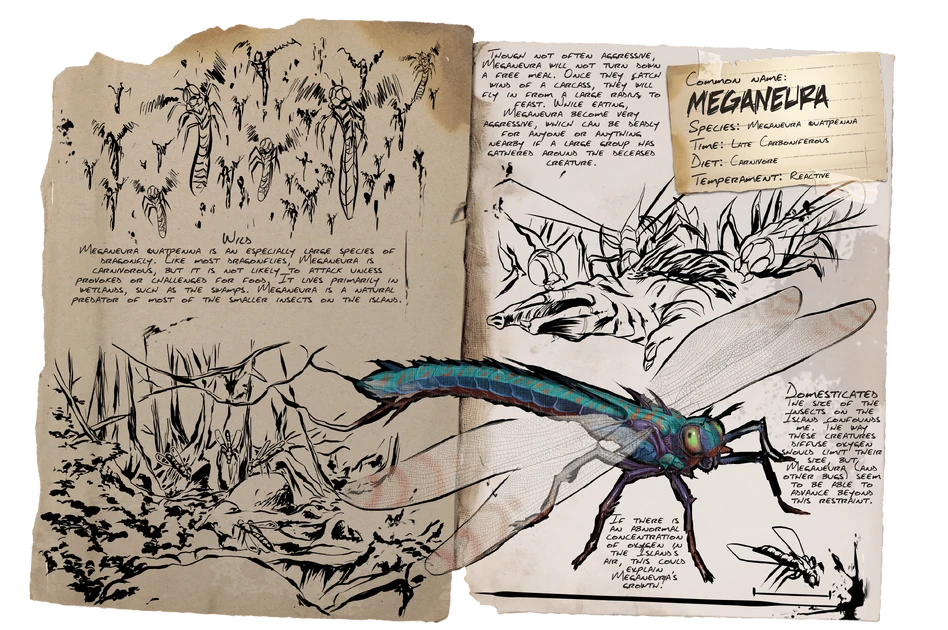

Primera aparición: Temporada 5 - capítulo 14
Tamaño (adulto): Envergadura - 1,2 metros, Altura - 40 centímetros
Hábitat: TODOS LOS PANTANOS Y CUEVAS DEL MUNDO
Dieta: Carnívora
Comportamiento: Agresivo
Nivel de amenaza: Baja, evitar si es posible
Nivel de pelea: 750